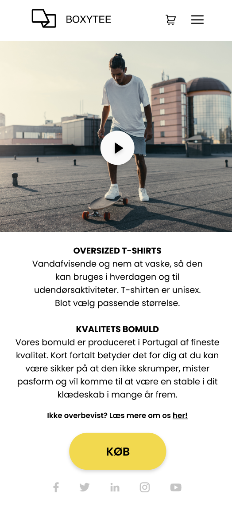

GRUNDLÆGGENDE WEB
ENDELIG PROTOTYPE
OPGAVE ID: 03.03.02
Denne opgave er en kulmination af alle de research metoder vi har brugt. Det endelige produkt. En hjemmeside der skal forestille sig at have et "iPhone-Look" over sig, så det stort set kunne blende sig ind for en iOS bruger, da min research viste at over 80% af deltagerne brugte dette styresystem på deres telefoner.
Prototypen er generelt opbygget via UI-Kits, som er fundet på nettet. Det er især smart for hurtigt at kunne stable en flot og funktionel prototype på benene.
Siden er fyldt med meget gennemtænkt arbejde, med basis i min research, som f.eks er lagt i ting som Micro-copy, Call to Action knapper og brugerrejsen, som er essentielle for den gode kundeoplevelse.
Tjek prototypen ud her!
